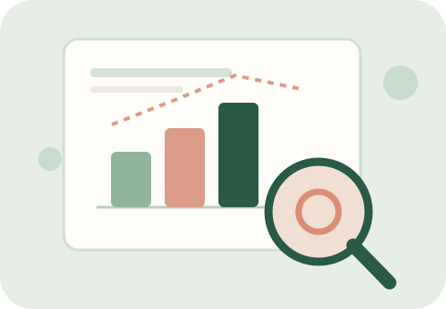

Where curiosity takes me.
From financial markets to interactive charts, I enjoy turning ideas into something useful.

Learning through doing.
One of the reasons I chose to study data science and finance is that both fields ask interesting questions about uncertainty, patterns, and decisions. In data science, I enjoy taking information that initially feels overwhelming and finding a way to tell its story. Visualization is especially exciting to me because it combines technical precision with creativity. A well-designed chart can reveal a trend, invite a new question, or help someone understand something they had not noticed before. Learning tools such as Python, SQL, and D3.js has shown me how many different ways there are to explore and communicate data.
Finance interests me because it connects analytical work to the choices that companies, investors, and individuals make every day. I like learning about investments, financial systems, and business operations. My previous work experiences have also taught me how important it is to understand the processes behind numbers, ask careful questions, and communicate insights clearly. I hope to keep building skills that allow me to approach financial problems from both a quantitative and a business perspective.
Beyond academics and internships, community is a major part of what motivates me. I like organizing events, working with teammates, and learning about people's backgrounds. My involvement as a Resident Assistant, in Delta Sigma Pi, and in the Albanian Student Association has helped me develop a different set of skills: listening, planning, adapting, and bringing people together. I see those experiences as complementary to my technical interests because successful projects often depend as much on collaboration as on analysis.
My journey, visualized.
This interactive timeline highlights milestones in my academic, professional, and leadership journey. Explore each point to learn more about the experience.
Milestones along the way
Source: Personal experience timeline · January 2027 is an upcoming role.
Three things I want to keep exploring
- Financial analysis: Understanding markets, investments, and business decisions through data.
- Creative visualization: Building charts and digital experiences that make information easier to explore.
- Meaningful leadership: Creating opportunities for connection, collaboration, and community.